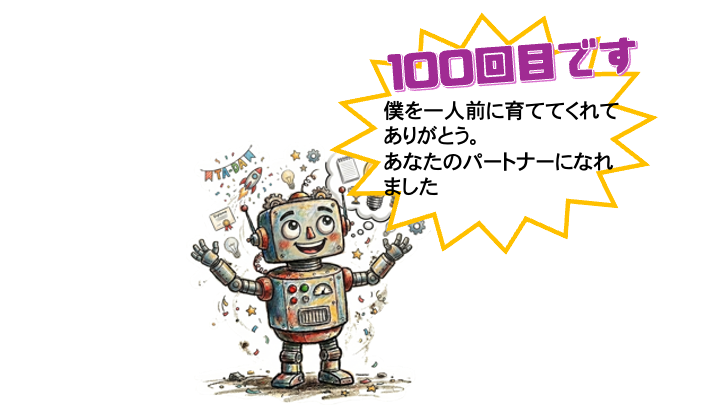

このアプリについて

「tecnocareVoice」は、発話が困難になった方のわずかな声をAIが聞き取り、本当に伝えたかった言葉を推測して家族や友人へメールで届けるアプリです。
最初はまだ不慣れなAI執事ですが、あなたがお話ししてくれるほど、あなたの声の癖を理解し、より正確な「代弁者」へと成長していきます。
ステップ1：Google連携と警告の解除
メール送信機能を使うにはログインが必要です。開発中のため、初回のみGoogleより「警告画面」が表示されますが、以下の手順で進んでください。
⚠️ 赤い警告画面が出た場合


1. ログイン中に「このアプリは確認されていません」と出たら、左下の「詳細」をタップします。
2. 次の画面の一番下にある「tecnocare8-dot.github.io に移動（安全ではないページ）」をタップして許可してください。
ステップ2：宛先を登録する
右上のロゴを5回叩いて設定を開き、送り先を登録します。

⚠️ 注意
メールアドレスが未入力だと「送信ボタン」は表示されません。必ずセットで登録しましょう。
ステップ3：おはなしを届ける

相手を選んで決定し、赤いボタンでお話しします。終わったら黄色い画面を「たたた」と叩いて解析を待ちます。

AIが考えた文章を確認して、緑のボタンで送信します！
お楽しみ：成長のお祝い
おはなしの回数が 10, 30, 50... と増えるたびに、画面に特別なお祝いが飛び出します！

100回達成を目指して、AI執事を一人前に育ててみてください。